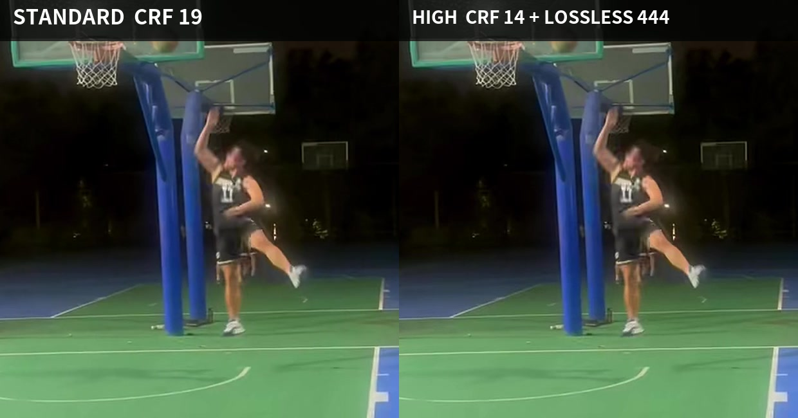
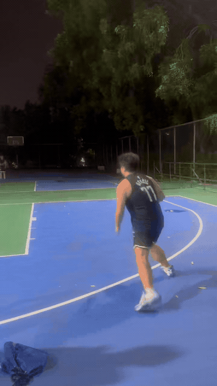
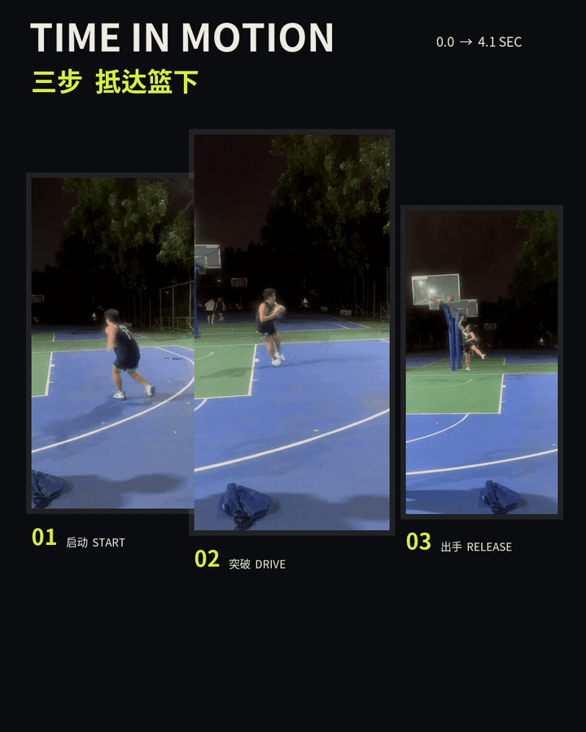
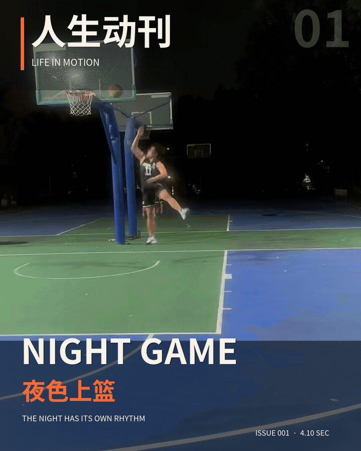

01 · Motion Cover
先锋动态封面
全出血运动画面与强刊头，验证它能否像一本真正会动的体育特刊。
PhotoManager · Motion Magazine Study 001
01 · Motion Cover
全出血运动画面与强刊头，验证它能否像一本真正会动的体育特刊。
02 · Break Frame Baseline
纸张留白、倾斜动态切面与跨层标题；尚未加入真正的人物分割蒙版。
03 · Time Slices
把启动、突破与出手放进同一版面，验证“时间本身就是杂志构图”。
本页的循环由浏览器播放器提供，仅用于检查首尾衔接。朋友圈是否自动播放、重播、压缩或改用其他封面，由微信客户端决定，仍需真机发布验证。
Quality Check · Source-Limited
原片只有 720 × 1280、约 645 kbps，并带有夜景运动模糊；生成 1080 × 1350 版面仍需放大 1.5 倍。新版将默认编码从 CRF 19 提高到 CRF 14，使用一次 Lanczos 规范化和轻度锐化，并由无损 4:4:4 版式母版分别导出各格式，但不会把不存在的细节伪装成真实高清。
Standard · CRF 19
约 2.3 MiB；更省空间，但夜景运动边缘更容易变软。
High · CRF 14
约 4.3 MiB；减少编码块和插值模糊，仍受原片清晰度上限约束。

GIF + Video · Input / Output Matrix
下面实际覆盖四条路径：视频→MP4、视频→GIF、GIF→MP4、GIF→GIF。GIF 使用原文件多帧解码；所有格式从同一无损 4:4:4 版式母版分别编码。输出 GIF 为 720 × 900、15 fps、最多 256 色，兼容性较直观但清晰度、渐变和体积都不如 MP4。

Input · Original GIF
360 × 640 · 49 帧 · 4.08 秒；直接解帧，不经过 Canvas。

GIF → GIF
720 × 900 · 90 帧 · 约 6.6 MiB；适合验证动图交付。
GIF → MP4
1080 × 1350 · 6 秒 · 约 4.3 MiB；文字、渐变和运动更稳定。

Video → GIF
720 × 900 · 90 帧 · 约 13.6 MiB；证明视频也能选择动图输出。